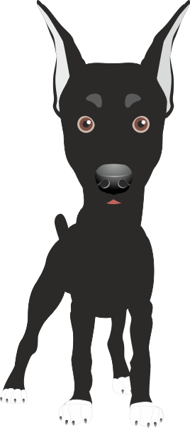

CONSEJOS PARA CUIDAR A TUS MASCOTAS
Perros senior
¿Los perros senior pueden tener sarro?
Aunque los veamos sonrientes y con toda la facha, es importante que en la tercera edad se le preste atención al cuidado dental. Para evitar que el sarro derive en enfermedades más graves es aconsejable mimarlos con snacks dentales y hasta lavarles los dientes con las instrucciones de su veterinario.
Alimento segun la edad de tu mascota
¿Tu perro debe cambiar de alimento al convertirse en senior?
Así es, como cuando eran cachorritos y se convirtieron en adultos... toca cambiazo de vuelta! Si tu perro es grandote se convierte en senior aproximadamente a los 7 años, y si es pequeño o mediano a partir de los 10 años. ¿Le estás dando el alimento correcto a tu mascota?